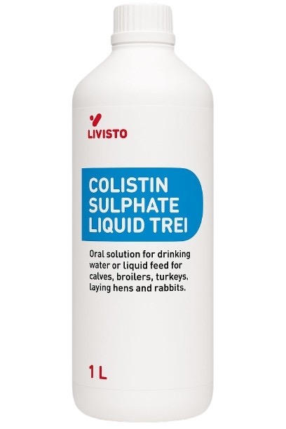
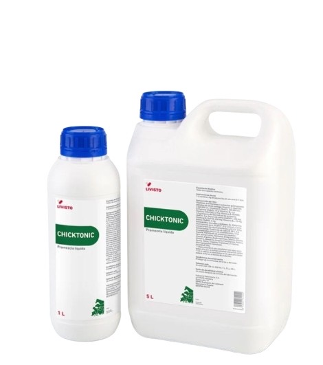
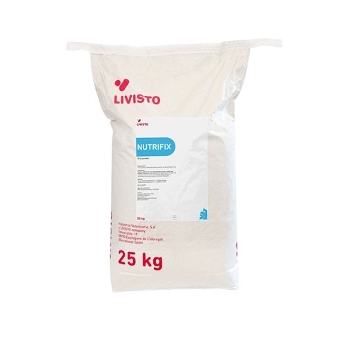
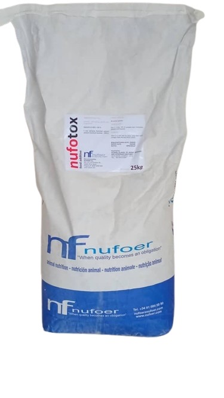
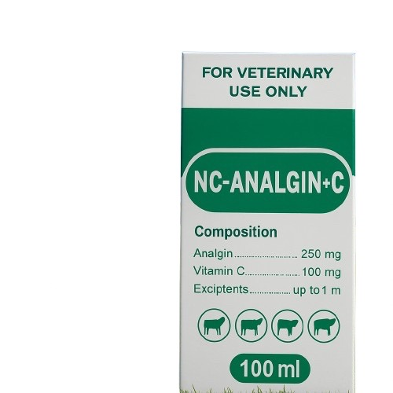

| صورة | اسم الدواء | الوصف | طريقة الاستعمال |
|---|---|---|---|
 |
COLISTIN SULPHATE LIQUID | محلول فموي مضاد للجراثيم (كوليستين) للاستعمال في ماء الشرب. | الدواجن: 1–2 مل لكل 1 لتر ماء لمدة 3–5 أيام. |
 |
CHICKTONIC | فيتامينات وأحماض أمينية لدعم النمو ومقاومة الإجهاد للطيور. | 1 مل لكل 2–4 لتر ماء لمدة 3–5 أيام، أو حسب توصية الطبيب. |
 |
NUTRIFIX 25kg | مُحسّن علف/مُدعّم غذائي لتحسين الأداء ومعدل التحويل. | يُخلط في العلف حسب الجدول الموصى به من المورد. |
 |
NUFOTOX 25kg | رابط سموم فطرية لحماية العلف من الأفلاتوكسين والسموم المشابهة. | 0.5–1 كغ لكل طن علف (حسب مستوى التلوث والبرنامج). |
 |
NC-ANALGIN + C (100 ml) | مسكن وخافض حرارة مع فيتامين C للحيوانات الصغيرة. | يُعطى حسب وزن الحيوان وتعليمات النشرة الداخلية. |